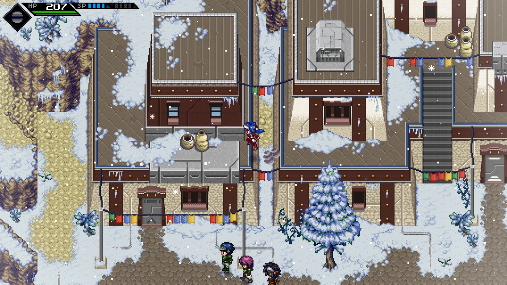
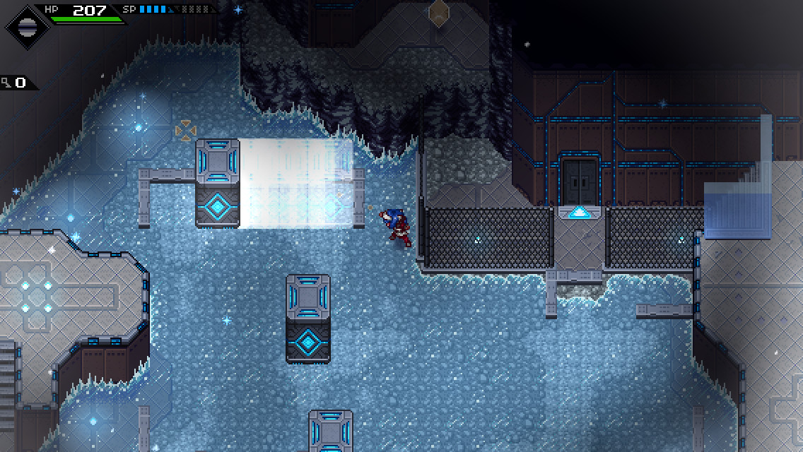
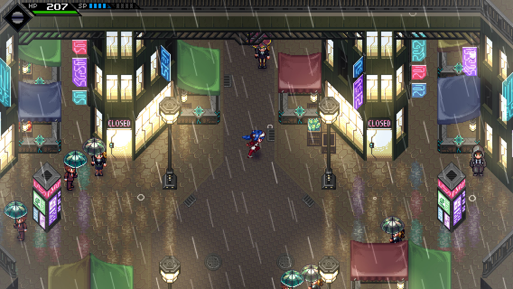
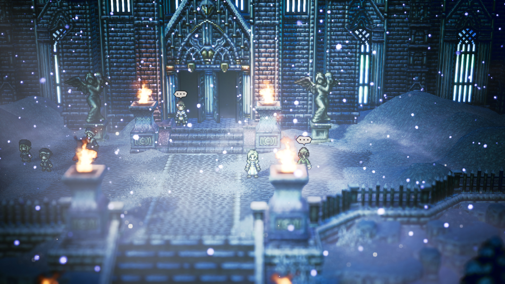
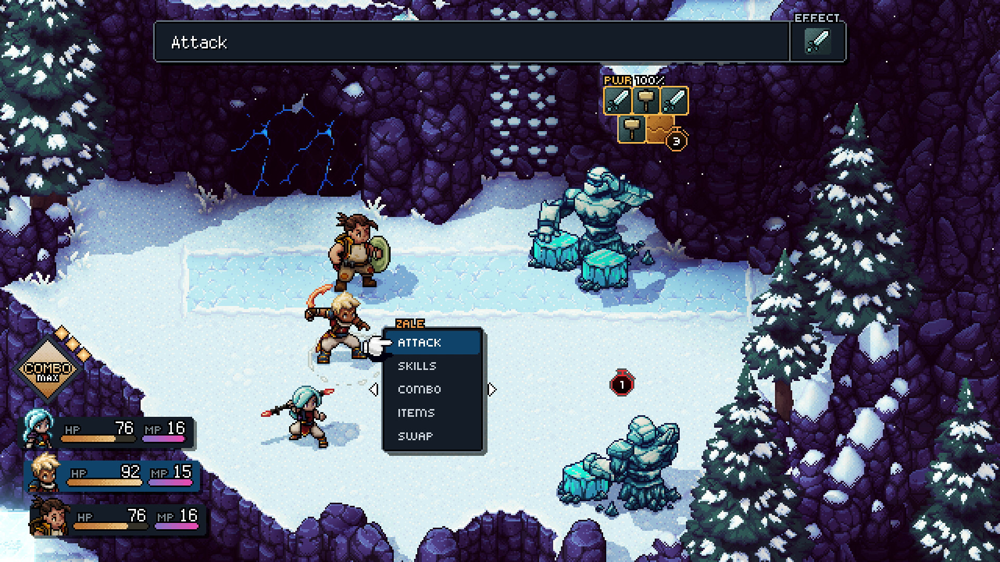
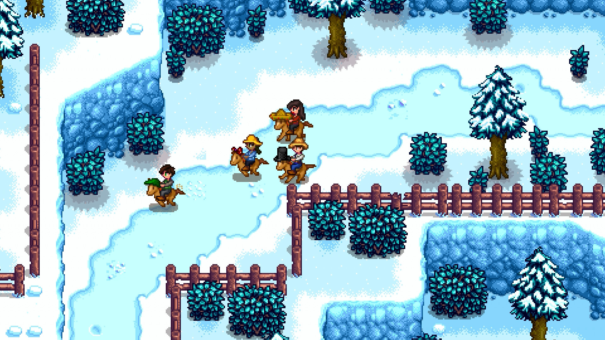
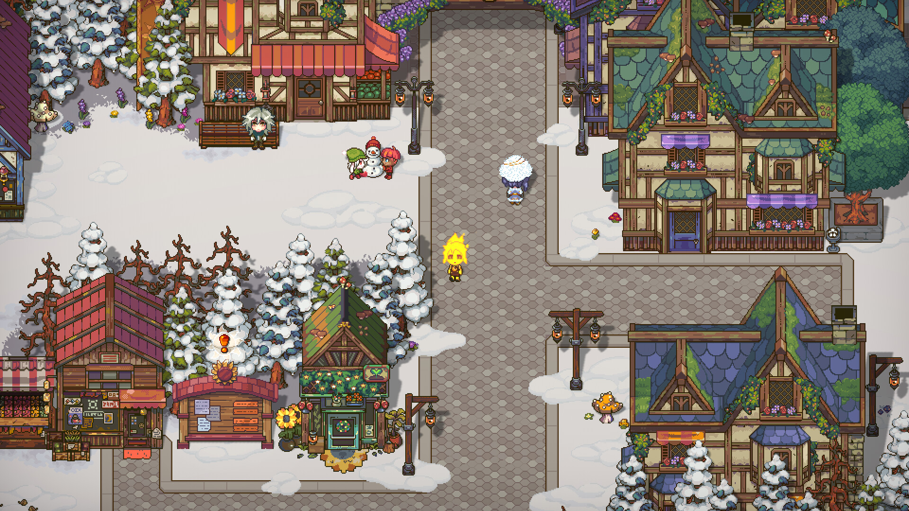
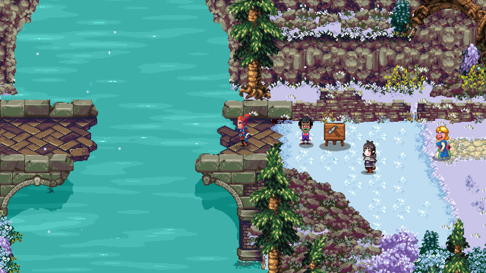
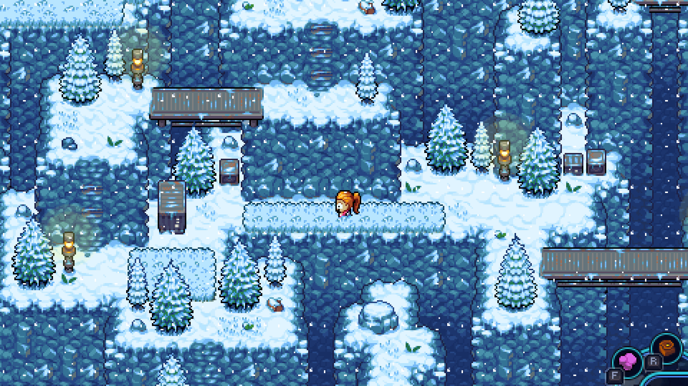
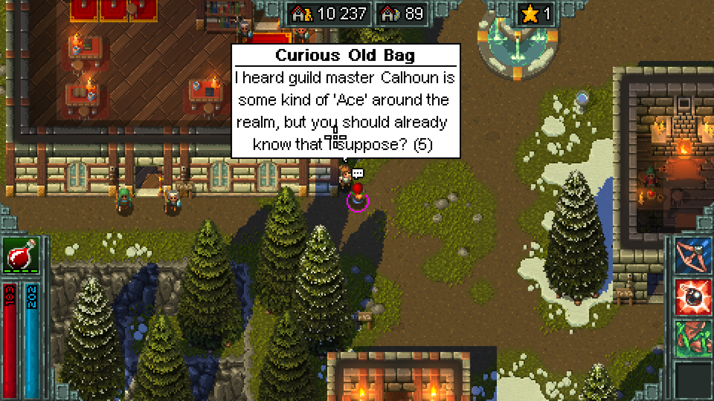

Zima i snieg: kotwice (oficjalne zrzuty Steam, tylko do prywatnej oceny)
CrossCode (3/4, natywnie 568x320, x2 na zrzucie 1136x640)
16: snieznie miasteczko, dzien; 10: lodowa jaskinia (zimne swiatlo); 5: noc w deszczu (nie snieg, wzor mokrego swiatla)



Octopath Traveler (HD-2D, noc, snieg)
10: katedra noca, platki + glebia ostrosci + pochodnie

Sea of Stars (3/4, x3, chibi)
0: sniezna jaskinia w walce

Stardew Valley (x4, 3/4 z gory)
11: zima, dzien

Sun Haven (x2, miasteczko zima, dzien)

Kynseed (x3, cienki snieg przy rzece)

Coromon (x4, chibi, opad i latarnie)

Heroes of Hammerwatch (x4, plamy sniegu pod sosnami)
